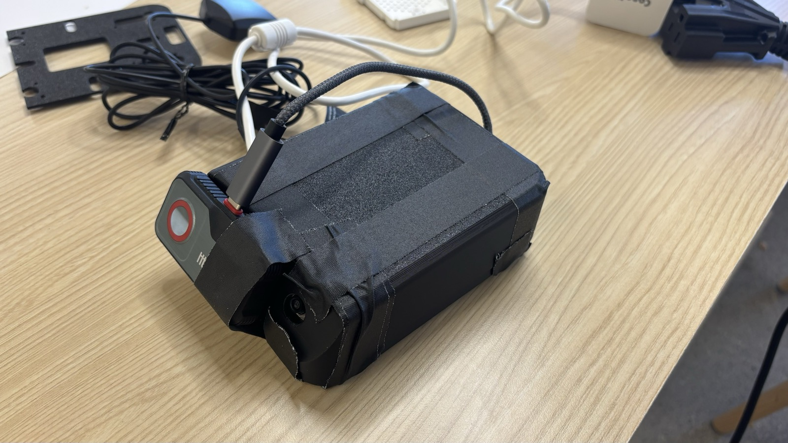
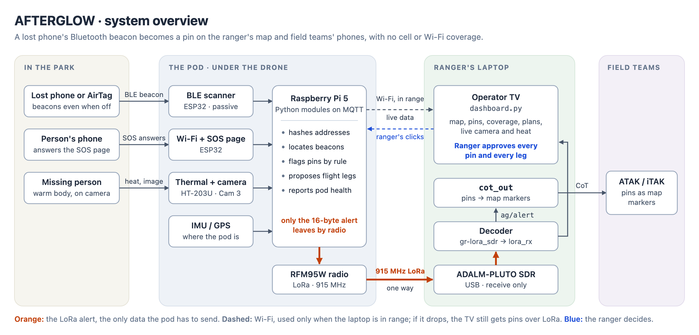
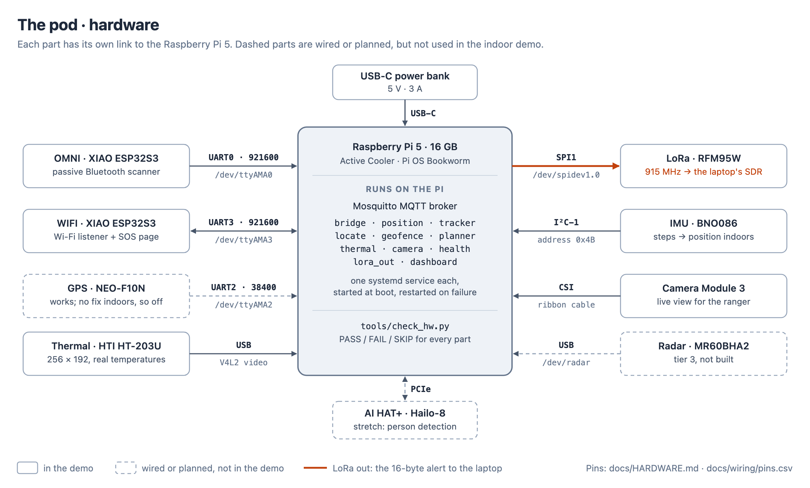
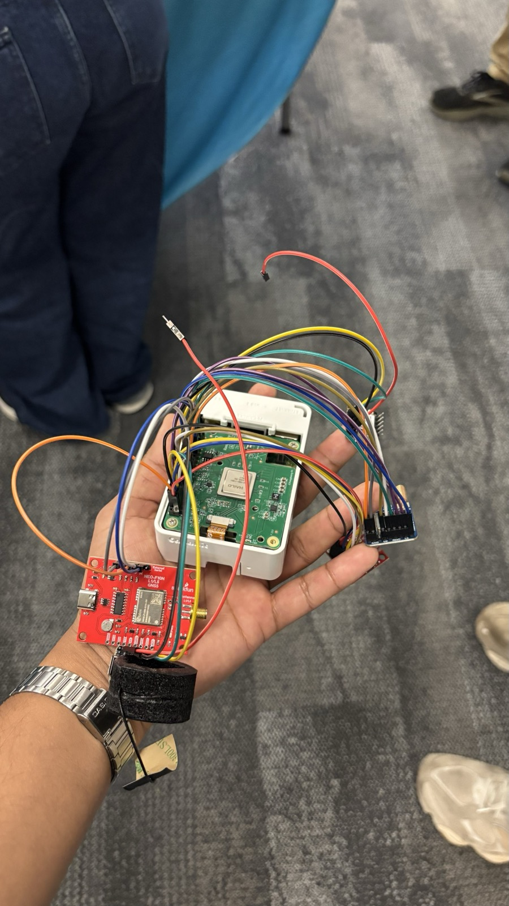

Drone Search Assist Payload · Afterglow
A drone payload that finds lost phones, even switched-off or dead ones, so park rangers can find the people who carried them.

01
The Problem
When someone goes missing in a park, rangers have to narrow a huge area down to one spot, fast. In an Oregon study of about 3,300 search subjects, search time was the only factor that predicted survival.
The lost person's phone is often the best clue. By the time a search starts, though, it is usually out of coverage, out of battery or switched off, and existing drone tools only find phones that are still on.
02
The Idea
Modern phones keep calling for help after they go quiet. An iPhone 11 or newer keeps sending an Apple Find My Bluetooth beacon for up to 24 hours after it is switched off, and for about 5 hours after its battery dies. Android phones in Google Find Hub or Samsung lost mode do something similar, and so do AirTags.
Afterglow is a sensing pod that straps under a drone and listens for those beacons. It pins each one on the park map and sends the pin to the ranger over long-range LoRa radio, with no cell service or Wi-Fi needed. Live camera and thermal views then help the ranger confirm that there's a person at the pin. The drone never decides: the software proposes, and a ranger approves every pin and every flight leg.

03
My Role
I worked on the hardware side of the pod: wiring the Raspberry Pi 5, ESP32 boards, LoRa radio, GPS, IMU and cameras together, troubleshooting them during bring-up, and writing the code that talks to the hardware. I wrote the pod's hardware reference that the rest of the team built the software against, assembled the finished pod, and worked on our presentation.
04
How It Works
- HearsA passive ESP32 Bluetooth scanner picks out lost-device beacons (Apple Find My, Google Find Hub, Samsung lost mode). It reads only each beacon's type marker and signal strength, never its contents.
- LocatesA tracker combines signal strength with the pod's own position to estimate where each beacon is, with a 95% confidence radius, and keeps following it even when the beacon's key rotates.
- FlagsThe ranger's rules decide which beacons become pins: off-trail beacons heard on repeat passes by day, anything outside the campgrounds at night, and every lost-device beacon during an active search.
- SendsEach pin leaves the pod as a 16-byte LoRa alert at 915 MHz. A software-defined radio on the ranger's laptop receives it, and the pin appears on the operator dashboard and on field teams' phones.
- Helps confirmThe ranger checks each pin with a live camera view and real thermal temperatures. An SOS Wi-Fi page lets the lost person answer "hurt? can walk? how many?", and each answer lands on the pin.

05
Results
- Bluetooth scanner, on hardware: in a crowded building it picked out about 1.5 Find My beacons per second from about 240 per second of other Apple traffic.
- LoRa link, on hardware: pins and heartbeats reached the laptop's SDR, and packets from 6 other teams were heard and filtered out.
- Thermal and live cameras, SOS page, Wi-Fi listener: all working on the pod, with all 9 pod services starting at boot.
- Simulated: tracking accuracy (worst error 1.5 m over 20 indoor runs) and a full park-scale mission on real Acadia National Park trails.
The drones available at the hackathon were too small to carry the pod, so we built and tested the payload on its own.
06
What I'd Do Next
- Fly it: strap the pod under a larger drone, then add an autopilot that flies the planner's legs, still with one ranger approval per leg.
- Measure with real beacons: run range tests and blind passes to tune the signal model.
- Person detection: use the Raspberry Pi AI HAT+ to point the ranger at likely people in the camera view.
07
Gallery

08